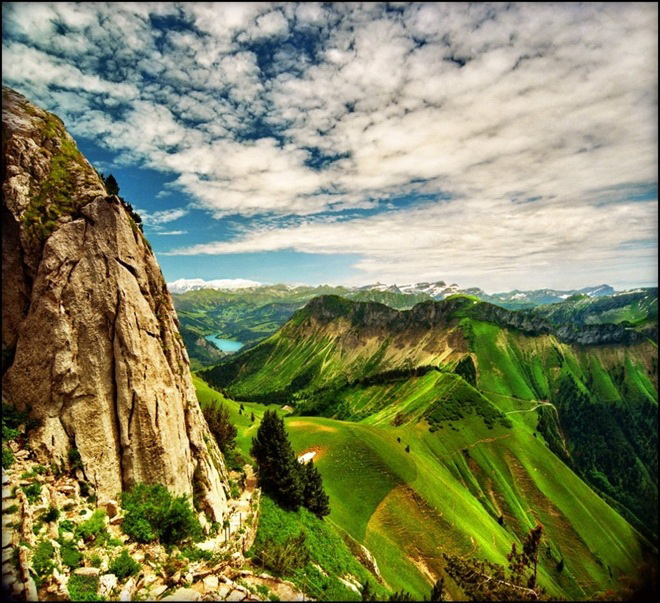
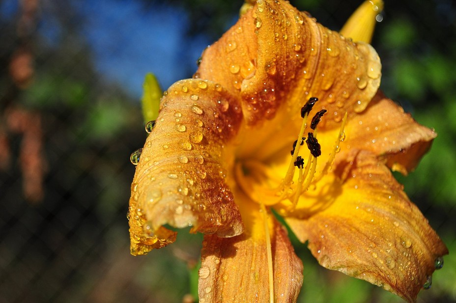
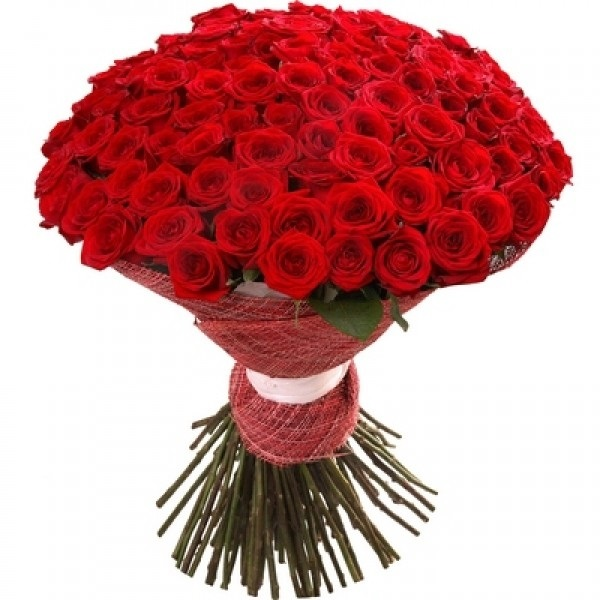
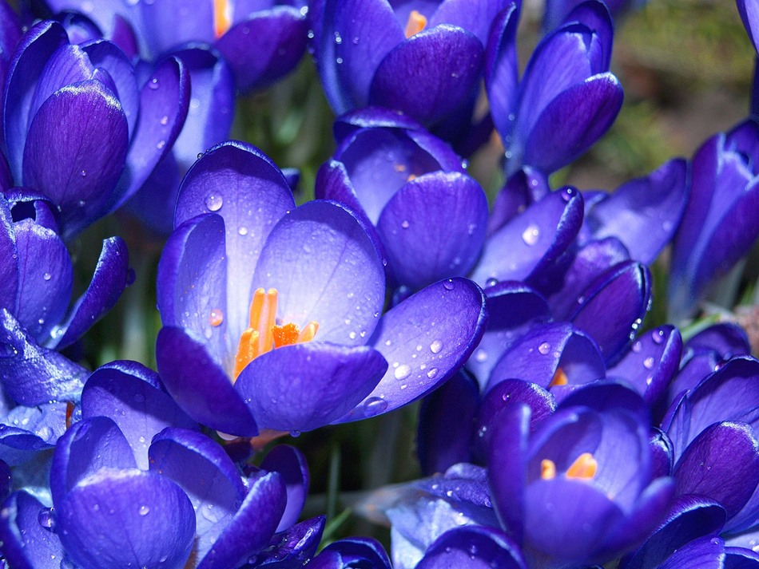
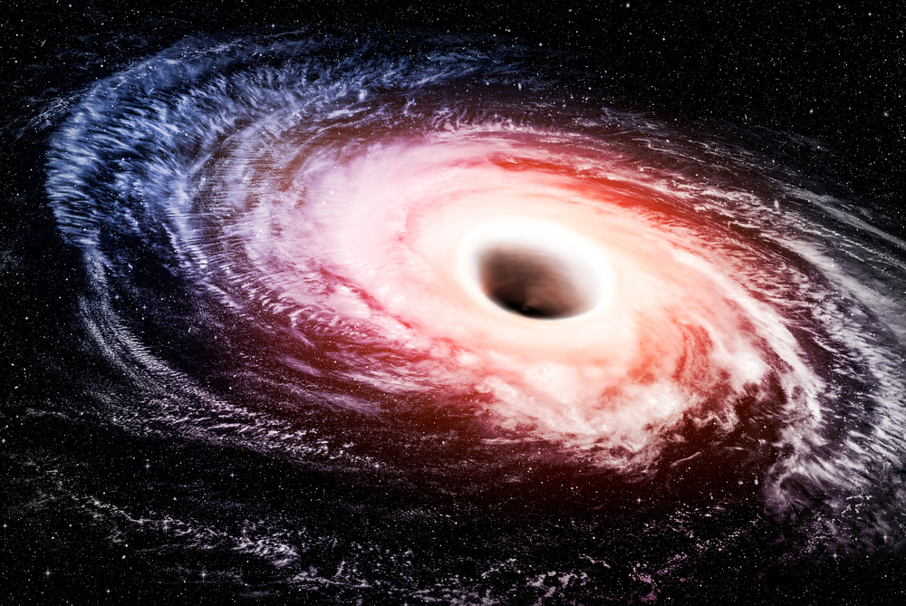

|
Форма области: прямоугольник (rect)  |
Зелёный — цвет природы, жизни и весны. Он символизирует рост, гармонию и свежесть.
Горы, покрытые зеленью, — идеальный образ этого цвета. |
|
Жёлтый — цвет солнца, радости и мудрости. Он стимулирует умственную деятельность
и связан с наукой и анализом. |
Форма области: окружность (circle)  |
|
Форма области: многоугольник (poly)  |
Красный — цвет всего мистического и таинственного. Издавна считался цветом мудрости и власти.
У древних иудеев он был царским цветом, в православии символизировал божественное проявление. |
|
Синий — цвет воды и воздуха. Успокаивает, создаёт ощущение комфорта и стабильности.
Символизирует вечные ценности, глубокие раздумья, преданность и честность. |
Формы: прямоугольник (rect) + окружность (circle)  |
|
Формы: неактивная окружность (nohref) + прямоугольник (rect)  |
Чёрные дыры — области в космосе, где гравитация настолько сильна, что ничто не сможет вырваться. |